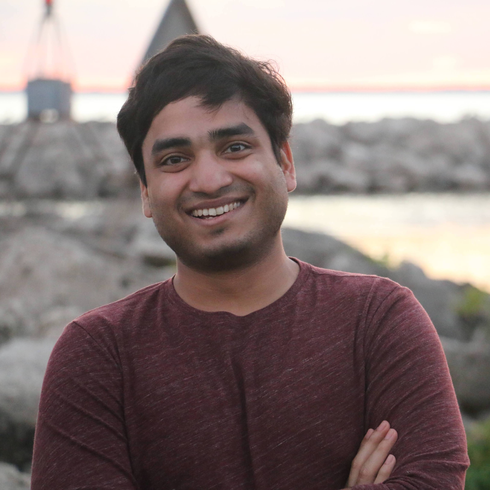

Subramaniam Balakrishna
Contact:
Email: bsmaniam [at] umich [dot] edu
Office: 1231 Beal Ave, University of Michigan, Ann Arbor, MI - 48109
Links:


I am a Ph.D. candidate in the Mechanical Engineering department at University of Michigan, Ann Arbor, advised by William W. Schultz.
My research interests lie in applying computational and analytical methods to better understand problems in fluid dynamics. More specifically, my interests include complex fluids, rheology, surface tension driven phenomena and low-Reynolds' number flows. My current research focuses on developing experimental and analytical frameworks to better characterize low-viscosity Newtonian and viscoelastic fluids, with applications in salivary health diagnostics.
Education
- Ph.D., Mechanical Engineering, 2021 (expected)
- University of Michigan
- M.S., Applied Mathematics, 2021
- University of Michigan
- M.S.E., Mechanical Engineering, 2018
- University of Michigan
- B.Tech., Mechanical Engineering, 2016
- National Institute of Technology, Tiruchirappalli ( NIT-T)
Publications/Preprints
-
Model-free Representation Learning and Exploration in Low-rank MDPs
Aditya Modi*, Jinglin Chen*, Akshay Krishnamurthy, Nan Jiang, Alekh Agarwal
* Equal contribution. -
Clinician-in-the-Loop Decision Making: Reinforcement Learning with Near-Optimal Set-Valued Policies
Shengpu Tang, Aditya Modi, Michael Sjoding, Jenna Wiens
International Conference on Machine Learning (ICML), 2020. -
No-regret Exploration in Contextual Reinforcement Learning
Aditya Modi and Ambuj Tewari
Conference on Uncertainty in Artificial Intelligence (UAI), 2020.
Abridged version accepted to ICML 2019 workshop on RL for Real Life and RLDM 2019. -
Sample Complexity of Reinforcement Learning using Linearly Combined Model Ensembles
Aditya Modi, Nan Jiang, Ambuj Tewari, Satinder Singh
International Conference on Artificial Intelligence and Statistics (AISTATS), 2020. -
Metareasoning in Modular Software Systems: On-the-Fly Configuration using Reinforcement Learning with Rich Contextual Representations
Aditya Modi, Debadeepta Dey, Alekh Agarwal, Adith Swaminathan, Besmira Nushi, Sean Andrist, Eric Horvitz
AAAI Conference on Artificial Intelligence (AAAI), 2020.
Invited poster, ICML 2019 Workshop on RL for Real Life. -
Markov Decision Processes with Continuous Side Information
Aditya Modi, Nan Jiang, Satinder Singh, Ambuj Tewari
Algorithmic Learning Theory (ALT) 2018.
Experience
-
Microsoft Research, Redmond
Research Intern, Adaptive Systems and Interaction group.
July-October 2018. -
Microsoft Research, Bangalore
Research Intern, Applied Sciences group.
May-July 2015.
Professional Service/Activity
- Reviewing: AAAI 2019, AISTATS 2019-21, ICML 2019-21 (Top reviewer '20), NeurIPS 2019-20 (Top reviewer '19,'20)
- Organization: Statistical Machine Learning Reading Group (EECS,2017-18).
Teaching
-
Introduction to Machine Learning - Winter 2017
Prof. Jenna Wiens, University of Michigan